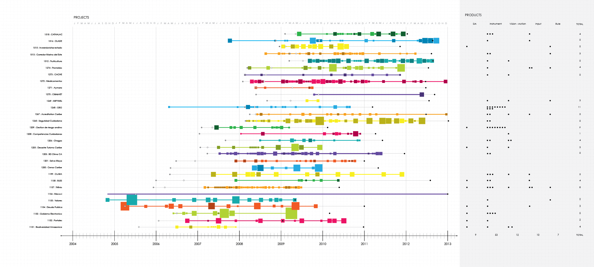
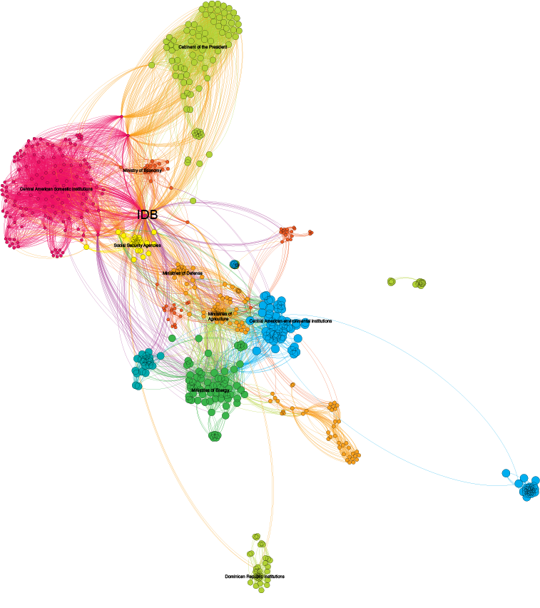

Networks in Regional Public Goods Projects
This report by the Regional Public Goods program at the Inter-American Development Bank highlights aspects of the natural networks that arise from collective endeavors. Our goal was to gain a better understanding of the scaling effects of collaborative efforts of both the governmental institutions and non-governmental organizations that participate in the program, with the IADB's role, in particular, in mind as the organization which acts as unifying agent for these groups.
